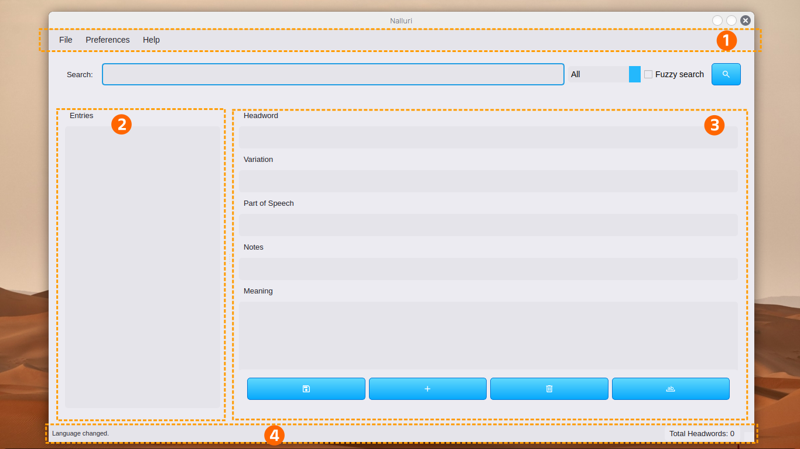
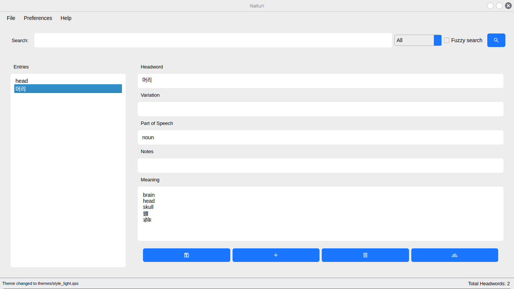

മുന്നുര
നല്ലുരി ഡിക്റ്റ്മേക്കർ ഇരുമൊഴിയിലുള്ള നിഘണ്ടുകൾ ഒരുക്കുന്നതിനായി പണികഴിപ്പിച്ച ഒരു തൊഴിലടിത്തറയുറ്റ നിഘണ്ടു നിർമ്മാണ-കൈകാര്യ ഉപകരണമാണ്. കെട്ടുപാടോടുകൂടിയുള്ള ഉള്ളടക്കങ്ങൾ, തലവാക്കുകൾ, ചൊല്ലിനം, വേണ്ടുന്ന കുറിപ്പുകൾ എന്നിവകൊണ്ട് നിഘണ്ടുക്കൾ മികവുറ്റ തരത്തിൽ ഒരുക്കുവാനും പിന്നീട് അവയുടെ മേൽനോട്ടം നടത്തുവാനും തിരുത്തലുകൾ വരുത്തുവാനും എല്ലാം ഇതുകൊണ്ട് കഴിയുന്നു. നിങ്ങൾ ഒരു ഭാഷാശാസ്ത്രജ്ഞനോ, ഗവേഷകനോ, മൊഴിമാറ്റുന്നയാളോ, ഭാഷകളോട് ചായ്വുള്ള ആളോ ആകട്ടെ, നല്ലുരി ഡിക്റ്റ്മേക്കർ ഒരു ഉപയോക്തൃ-ചങ്ങാത്ത തൊടുമുകം ഉൾപ്പെടുന്നതും നിഘണ്ടു ഒരുക്കുന്നതിന് കരുത്തുറ്റ ഉപകരണങ്ങൾ ഉൾക്കൊള്ളുന്നതുമായ. ഉള്ളടങ്ങിയിട്ടുള്ള തിരയൽ, അരിപ്പ്, പകർപ്പു കണ്ടെത്തൽ, കയറ്റുമതി ഇറക്കുമതി ഏർപ്പാടുകൾ എന്നിവകൊണ്ട് നിഘണ്ടു തരവ് (ഡാറ്റ) കൈകാര്യം ചെയ്യുന്നതിനുള്ള എളുപ്പമുള്ള പണിയുരിപ്പടികൾ ഇത് ഉറപ്പാക്കുന്നു.
നാട്ടൽ
നിങ്ങളുടെ സിസ്റ്റത്തിൽ നല്ലൂരി ഡിക്റ്റ്മേക്കർ നാട്ടാൻ ഈ ചുവടുകൾ പിൻപറ്റുക:
ഡെബിയൻ/ഉബുണ്ടു സിസ്റ്റങ്ങൾ
നിങ്ങൾ ഡെബിയൻ അടിത്തറയായുള്ള ഓപ്പറേറ്റിംഗ് സിസ്റ്റം ഉപയോഗിക്കുകയാണെങ്കിൽ, നേരിട്ട് Github ഡൗൺലോഡ് താളിലേക്ക് പോയി ഏറ്റവും പുതിയ .deb ഫയൽ ഇറക്കിവെയ്ച്ചതിനു പിറകെ താഴെ പറയുന്ന കമാൻഡ് ഉപയോഗിച്ച് പ്രോഗ്രാം നാട്ടുക
sudo dpkg -i nalluri_1.0_amd64.deb
അറിയിപ്പ്:നിങ്ങൾ ഇറക്കിവയ്ക്കുന്ന പതിപ്പ് മാറ്റമുള്ളതായിരിക്കാം, കമാൻഡ് കൊടുക്കുന്നതിന് മുമ്പ് ഉറപ്പ്പുവരുത്തുക.
മറ്റുള്ളവർക്ക്
മുൻകൂറ് വേണ്ടുന്നവ
Github ഡൗൺലോഡ് താളിലേക്ക് പോയി ഏറ്റവും പുതിയ .zip ഫയൽ ഇറക്കിവയ്ച്ച് അത് വിരിച്ചെടുക്കുക.
- Python3 അതിനു മേലോ
- Sqlite
വിൻഡോസ്
- കമാൻഡ് പ്രോംപ്റ്റ് തുറക്കുക:
- app.py ഉള്ളിടട്തേക്ക് പോകുക.
- നിങ്ങളുടെ സ്ക്രിപ്റ്റ് ചുവടെ കാണുന്ന കമാൻഡുകൊണ്ട് പ്രവർത്തിപ്പിക്കുക:
cd path\to\your\folder
python app.py
ലിനക്സും മാക്കും
- .zip അല്ലെങ്കിൽ .tar.gz ഫയൽ വിരിച്ചെടുത്തുവച്ച ഫോൾഡറിൽ ടെർമിനൽ തുറക്കുക.
- താഴെ പറയുന്ന കമാൻഡ് പ്രവർത്തിപ്പിക്കുക
python3 app.py
തൊടുമുകം
നിഘണ്ടു കൈകാര്യം മികവുറ്റതാക്കുന്നതിനുള്ള പലവക ഉരുപ്പടികൾ നല്ലുരി ഡിക്ട്മേക്കറിൽ അടങ്ങിയിട്ടുണ്ട്.
ഒന്നാമത്തെ തവണ തുറക്കുമ്പോൾ
നിങ്ങൾ ഒന്നാമതായി പ്രോഗ്രാം തുറക്കുമ്പോൾ, ഇനിപ്പറയുന്നവ നിങ്ങൾ കാണും:

- മേൽ മെനു:.db ഫയലുകൾ, CSV, JSON എന്നിവയുൾപ്പെടെയുള്ള ഫയലുകൾ ഉളവാക്കുന്നതിനും തുറക്കുന്നതിനും ഇറക്കുമതി ചെയ്യുന്നതിനും കയറ്റുമതി ചെയ്യുന്നതിനുമുള്ള ഫയൽ മെനു നിങ്ങൾ ഇവിടെയാണ് കാണാനാകുക.
- ഉള്ളടക്ക പാതി:ഇവിടെയാണ് തലവാക്കുകൾ കാട്ടുക. ഇപ്പോൾ ഇവിടെ ഒന്നുമില്ലെന്ന് കാണാം, എന്തെന്നാൽ നമ്മൾ ഒരു പുതിയ ഫയൽ ഉളവാക്കിയില്ല അല്ലെങ്കിൽ ഒന്ന് ഇറക്കുമതി ചെയ്തിട്ടില്ല. നിങ്ങൾ ഒരു ഫയൽ ഇറക്കുമതി ചെയ്തുകഴിഞ്ഞാൽ അല്ലെങ്കിൽ ഒരു പുതിയ ഡാറ്റാബേസ് (തരവറ) ഉളവാക്കികഴിഞ്ഞാൽ, ഈ പാതി തലവാക്കുകൾകൊണ്ട് നിറയും.
- തിരുത്തൽ പാതി:ഇവിടെയാണ് നിങ്ങൾ പുതിയ വാക്കുകൾ ചേർക്കുകയോ നിലവിലുള്ളവ തിരുത്താനോ കഴിയുന്നത്. ഉള്ളടക്ക പാതിയിൽ ഒരു തലവാക്കിൽ ഞെക്കിയാൽ, ഈ പാതിയിലേക്ക് ആ തലവാക്കിൽ അടങ്ങിയിരിക്കുന്ന എല്ലാ വിവരങ്ങളും കാണിക്കും.
- നിലകാട്ടി:ഡാറ്റാബേസ് ഇറക്കുമതി, പിശക്, തിരുത്തൽ, തലവാക്കുകളുടെ എണ്ണം തുടങ്ങിയ വിവരങ്ങൾ ഇവിടെ കാണിക്കുന്നു.
മുകളിലെ മെനുവിന് തൊട്ടുതാഴെയായി നിങ്ങൾക്ക് തിരച്ചിൽ പെട്ടിയും അതോടുചേർന്ന ഉരുപ്പടികളും കാണാനാകും. തിരച്ചിൽ പെട്ടിയിൽ കൂടുതൽ കാര്യങ്ങളുണ്ട്.
ഫയൽ കെട്ടുംമട്ടും
നല്ലുരി ഡിക്റ്റ്മേക്കർ ഉപയോക്താക്കളെ CSV (*.csv), JSON (*.json) കെട്ടുപാടുകളിൽ നിന്ന് ഡാറ്റ ഇറക്കുമതി ചെയ്യാനും കയറ്റുമതി ചെയ്യാനും അനുവദിക്കുന്നു. നിങ്ങൾക്ക് ഒരു ഡാറ്റാബേസിലേക്ക് പരിവർത്തനം ചെയ്യാൻ ആഗ്രഹിക്കുന്ന ലെക്സിക്കൽ വിവരങ്ങൾ ഇതിനകം ഉള്ളപ്പോൾ ഇത് ഉപയോഗപ്രദമാണ്. നിങ്ങളുടെ *.csv അല്ലെങ്കിൽ *.json ഫയൽ നല്ലുരിയുടെ നിർദ്ദിഷ്ട കെട്ടുപാടിലേക്ക് പൊരുത്തപ്പെടുത്തേണ്ടതുണ്ട്. (സോഫ്റ്റ്വെയറിൽ നിന്ന് ഒരു ഉദാഹരണ ഫയൽ എക്സ്പോർട്ട് ചെയ്യുന്നതിലൂടെ നിങ്ങൾക്ക് ഇത് കാണാൻ കഴിയും).
id,headword,variation,part_of_speech,notes,meanings
1,머리,,noun,,brain;;head;;skull
[
{
"id": 1,
"headword": "머리",
"variation": "",
"part_of_speech": "noun",
"notes": "",
"meanings": [
"brain",
"head",
"skull"
]
}
]
- ഇത് ഒരു സുരക്ഷാ പാളിയായി പ്രവർത്തിക്കുന്നു, അതിനാൽ നിങ്ങളുടെ ഡാറ്റാബേസിന് കേടുപാടുകൾ വരുത്താതെ ലെക്സിക്കൺ ഡാറ്റ കൈകാര്യം ചെയ്യാൻ കഴിയും.
- നിങ്ങൾക്ക് ഫയലുകളിൽ പുറമേനിന്ന് പ്രവർത്തിക്കാൻ കഴിയും.
- നിലവിൽ, JSON, CSV ഫയലുകൾ ഡാറ്റാബേസിലേക്ക് ഇറക്കുമതി ചെയ്യുമ്പോൾ മേലെഴുത്ത് ലഭ്യമല്ല.
CSV ഫയലുകൾ (.csv) ഇറക്കുമതി ചെയ്യലും കയറ്റുമതി ചെയ്യലും
നല്ലുരി ഡിക്റ്റ്മേക്കർ നിങ്ങളെ .csv ഫയലുകൾ ഇറക്കുമതി ചെയ്യാനും കയറ്റുമതി ചെയ്യാനും അനുവദിക്കുന്നു. ലെക്സിക്കൽ ഡാറ്റയുള്ള ഒരു .csv ഫയൽ നിങ്ങളുടെ പക്കലുണ്ടെങ്കിൽ, നിങ്ങൾക്ക് അത് നിങ്ങളുടെ നിലവിലെ ഡാറ്റാബേസിലേക്ക് ഇറക്കുമതി ചെയ്യാൻ കഴിയും.
- ഓല > CSV കയറ്റുക
- നിങ്ങളുടെ CSV തിരഞ്ഞെടുക്കുക (അത് നിർദ്ദിഷ്ട മട്ടിലാണെന്ന് ഉറപ്പാക്കുക)
- ഓല > CSV ഇറക്കുക
- നിങ്ങളുടെ ഫയലിന് ഒരു പേരുനൽകി കാത്തുവയ്ക്കുക
JSON ഫയലുകൾ (.json) ഇറക്കുമതി ചെയ്യലും കയറ്റുമതി ചെയ്യലും
നല്ലുരി ഡിക്റ്റ്മേക്കർ നിങ്ങളെ .json ഫയലുകൾ ഇറക്കുമതി ചെയ്യാനും കയറ്റുമതി ചെയ്യാനും അനുവദിക്കുന്നു. ലെക്സിക്കൽ ഡാറ്റയുള്ള ഒരു .json ഫയൽ നിങ്ങളുടെ പക്കലുണ്ടെങ്കിൽ, നിങ്ങൾക്ക് അത് നിങ്ങളുടെ നിലവിലെ ഡാറ്റാബേസിലേക്ക് ഇറക്കുമതി ചെയ്യാൻ കഴിയും.
- ഓല > JSON കയറ്റുക
- നിങ്ങളുടെ JSON തിരഞ്ഞെടുക്കുക (അത് നിർദ്ദിഷ്ട മട്ടിലാണെന്ന് ഉറപ്പാക്കുക)
- ഓല > JSON ഇറക്കുക
- നിങ്ങളുടെ ഫയലിന് ഒരു പേരുനൽകി കാത്തുവയ്ക്കുക
തിരച്ചിലും അരിക്കലും
സാധാരണ തിരയൽ
തനി നിലയിൽ, തിരച്ചിൽപെട്ടിയിൽ കുറിപ്പുകൾ ഒഴികെയുള്ള എല്ലാ ഉള്ളടക്കങ്ങളും നിങ്ങൾക്ക് തിരയാൻ കഴിയും. (എല്ലാം എന്നത് തിരഞ്ഞെടുത്തിട്ടുണ്ടെന്ന് ഉറപ്പാക്കുക). എന്നാൽ നിങ്ങൾക്ക് തലവാക്കുകൾ അല്ലെങ്കിൽ പൊരുൾ മാത്രമായി തിരയണമെങ്കിൽ, നിങ്ങൾക്ക് അത് ഇനിപ്പറയുന്ന രീതിയിൽ ചെയ്യാം:
- തിരച്ചിൽപെട്ടിയുടെ വലതുവശത്തുള്ള ഡ്രോപ്പ്ഡൗൺ (എല്ലാം) ഞെക്ക്കി നിങ്ങൾക്ക് വേണ്ടുന്ന അരിപ്പ തിരഞ്ഞെടുക്കുക.
- നിങ്ങൾക്ക് തിരയേണ്ടത് ടൈപ്പ് ചെയ്ത് വലതുവശത്തെ ഏറ്റവും വലത് കോണിലുള്ള തിരച്ചിൽ കുടുക്കിൽ ഞെക്കുക.
ഉറപ്പില്ലാ തിരയൽ
ഈ ഓപ്ഷൻ ഏതാണ്ട് അടുത്തുവരുന്ന പൊരുത്തങ്ങൾ തിരയാൻ നിങ്ങളെ അനുവദിക്കുന്നു. ടൈപ്പ് ചെയ്യുമ്പോൾ എന്തെങ്കിലും തെറ്റ് ഉണ്ടായാലോ, എന്താണ് തിരയേണ്ടതെന്ന് നിങ്ങൾക്ക് ഉറപ്പില്ലെങ്കിലോ, എഴുത്തുപിഴവുണ്ടാകുകയോ, തിരയേണ്ടത് മറന്നുപോയാലോ, നിങ്ങൾക്ക് ഈ ഫംഗ്ഷൻ ഉപയോഗിക്കാം.
- ഉറപ്പില്ലാ തിരയൽ തനി നിലയിൽ അണഞ്ഞുകിടക്കുകയായിരിക്കും. അത് ഉണർത്താൻ ചെക്ക്ബോക്സിൽ ഞെക്കുക
- അത് അണയ്ക്കാൻ വീണ്ടും ചെക്ക്ബോക്സിൽ ഞെക്കുക.
- ഉറപ്പില്ലാ തിരയൽ ഉണർന്നിരിക്കുമ്പോൾ, നിങ്ങൾക്ക് ഏതാണ്ട് അടുത്തുവരുന്നവ തിരയാൻ കഴിയും.
പകർപ്പ് ഉള്ളടക്കങ്ങൾ കണ്ടെത്തുക
പകർപ്പ് ഉള്ളടക്കങ്ങൾ കണ്ടെത്തുക എന്ന സവിശേഷതയുടെ പിന്തുണയോടെ നിങ്ങളുടെ ഡാറ്റാബേസിൽ ഇരട്ട ഉള്ളടക്കങ്ങൾ കണ്ടെത്താൻ കഴിയും. നിങ്ങൾക്ക് അത് ചെയ്യാൻ രണ്ട് വഴികളുണ്ട്.
- ഓല > പകർപ്പു കാട്ടുക
- തിരുത്തൽ പാതിയിൽ - താഴെ വലത് മൂലയിൽ. ab യും അടിവരയുമുള്ള ബട്ടണിൽ ഞെക്കുക.
പലമൊഴി നിഘണ്ടുകൾ ഒരുക്കാം
നല്ലൂരി പ്രധാനമായും ഇരുമൊഴി ക്രോസ് നിഘണ്ടുക്കൾ നിർമ്മിക്കുന്നതിനാണ് ഉദ്ദേശിച്ചതെങ്കിലും, നിങ്ങൾക്ക് ബഹുഭാഷാ നിഘണ്ടുക്കൾ നിർമ്മിക്കാനും ഇത് ഉപയോഗിക്കാം. നിങ്ങൾക്ക് ഏത് ഭാഷയിലും തലവാക്കുകൾ, അർത്ഥങ്ങൾ, മറുവടിവുകൾ, ചൊല്ലിനം, കുറിപ്പുകൾ എന്നിവ നൽകാം.
മറുവടിവ് പെട്ടിവച്ച് ഒരു മൂമൊഴി നിഘണ്ടു ഉളവാക്കാം.
ലക്ഷ്യ ഭാഷ ഇംഗ്ലീഷും ഉറവിട ഭാഷകൾ സ്വീഡിഷ്, ഡാനിഷ് (ബന്ധപ്പെട്ട ഭാഷകൾ) ഉം ആയ ഒരു സ്വീഡിഷ്-ഡാനിഷ് ഇംഗ്ലീഷ് നിഘണ്ടു സൃഷ്ടിക്കാൻ നിങ്ങൾ ആഗ്രഹിക്കുന്നുവെന്ന് കരുതുക. സ്വീഡിഷ് അല്ലെങ്കിൽ ഡാനിഷ് പദങ്ങൾ ടൈപ്പ് ചെയ്യാനും അർത്ഥ ബോക്സ് ഇംഗ്ലീഷ് കൊണ്ട് പൂരിപ്പിക്കാനും നിങ്ങൾക്ക് വേരിയേഷൻ ബോക്സ് മാത്രമേ ഉപയോഗിക്കാൻ കഴിയൂ. ഇതുവഴി നിങ്ങൾക്ക് അനുബന്ധ ഭാഷകൾക്കായി നിഘണ്ടുക്കൾ സൃഷ്ടിക്കാൻ കഴിയും.
മറ്റ് പലമൊഴി നിഘണ്ടുക്കൾ
നല്ലൂരി ഒരു സ്ട്രക്യൂട്ട് ചെയ്ത ഡാറ്റാബേസ് ഉപയോഗിക്കുന്നതിനാൽ, ഒരു റിവേഴ്സ് നിഘണ്ടു നിർമ്മിക്കാൻ നിങ്ങൾക്ക് ഒരൊറ്റ ഡാറ്റാബേസ് ഉപയോഗിക്കാം. ഉദാഹരണത്തിന്, ജർമ്മൻ അർത്ഥങ്ങളുള്ള ഇംഗ്ലീഷ് തലവാക്കുകളുടെയും ഇംഗ്ലീഷ് അർത്ഥങ്ങളുള്ള ജർമ്മൻ തലവാക്കുകളുടെയും ഒരു ശേഖരം നിങ്ങൾക്ക് ഉണ്ടായിരിക്കാം. ഓൺലൈൻ നിഘണ്ടു API-കളും മറ്റും നിർമ്മിക്കുന്നതിന് നിങ്ങൾക്ക് ഡാറ്റാബേസ് ഉപയോഗിക്കാം.
പിന്തുണ
നിങ്ങൾക്ക് എന്തെങ്കിലും കുഴപ്പങ്ങൾ നേരിടുന്നുണ്ടെങ്കിലോ നിങ്ങൾക്ക്ക് കൂടുതൽ പിന്തുണ വേണ്ടിവരുന്നുവെങ്കിലോ, ചുവടെപ്പറയുന്ന ഉറവിടങ്ങൾ കാണുക:
- കുഴപ്പങ്ങൾ അറിയിക്കുന്നതിനോ പുതിയ സവിശേഷതകൾ നിർദ്ദേശിക്കുന്നതിനോ ഞങ്ങളുടെ GitHub ശേഖരം കാണുക.
- pachamalayalamproject@gmail.com എന്ന ഇമെയിൽ വിലാസത്തിൽ ഞങ്ങളുടെ പിന്തുണാ ടീമിനെ ബന്ധപ്പെടുക..